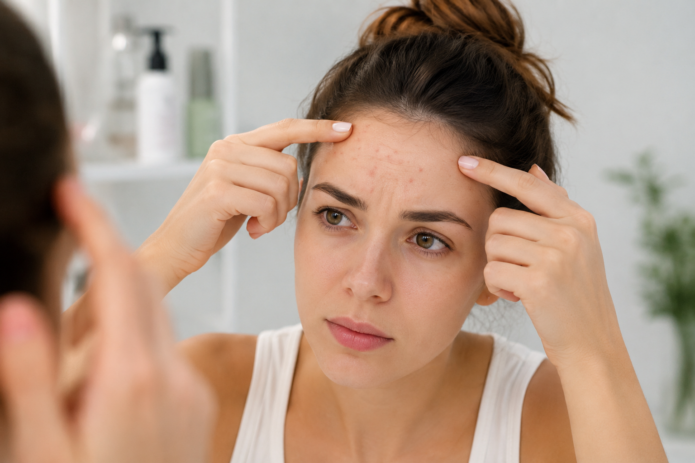
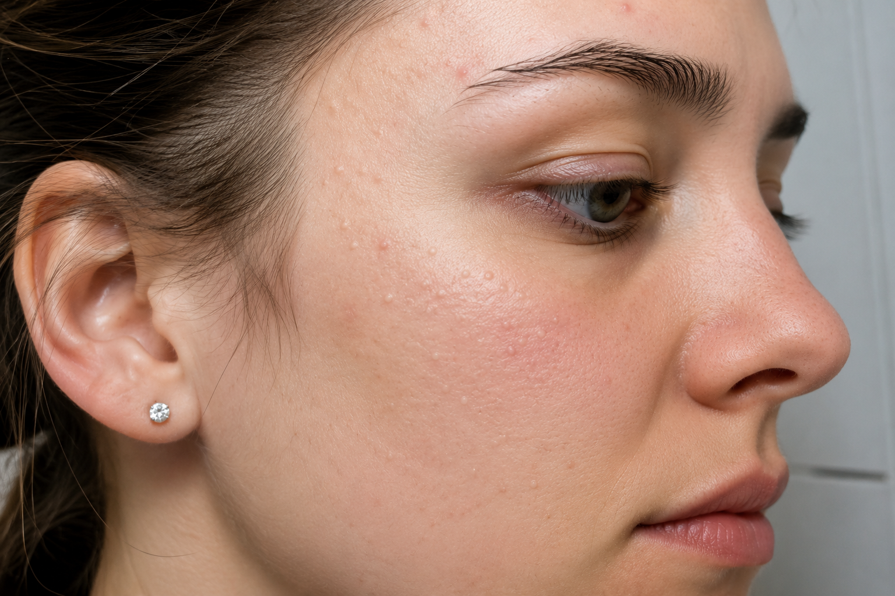
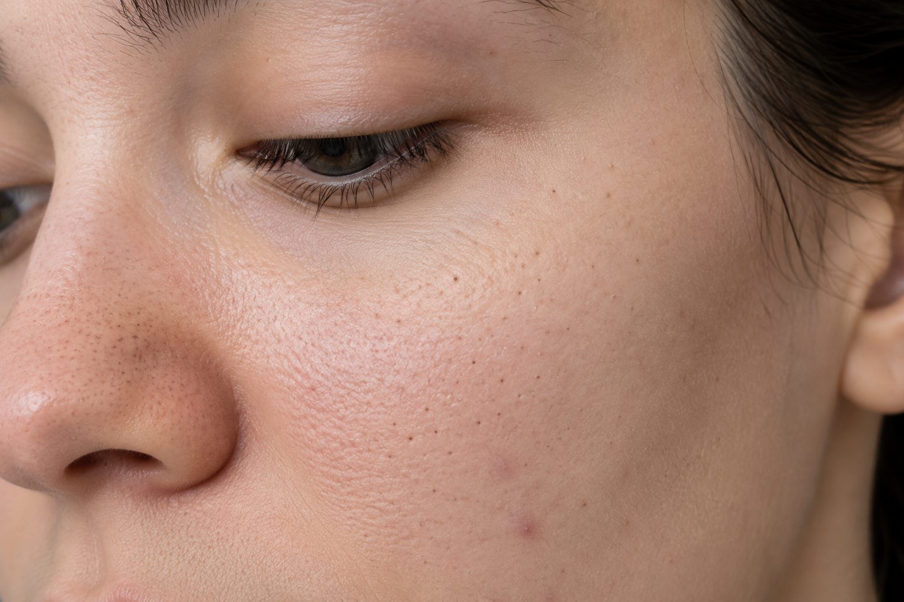
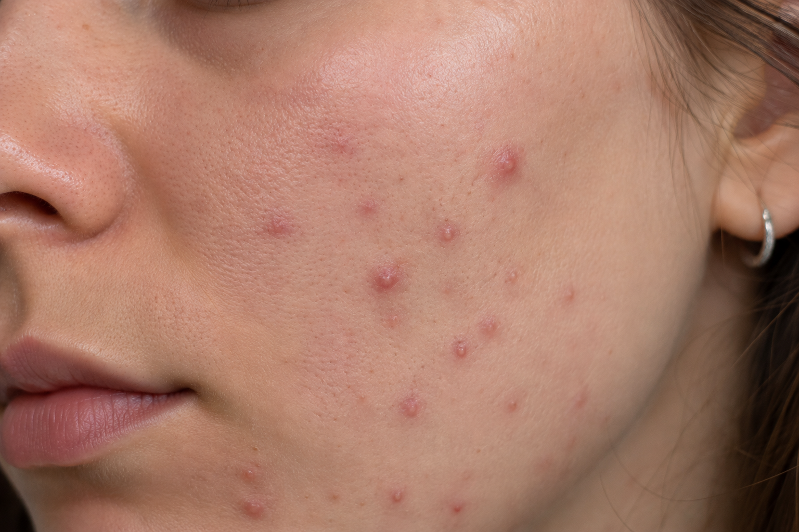
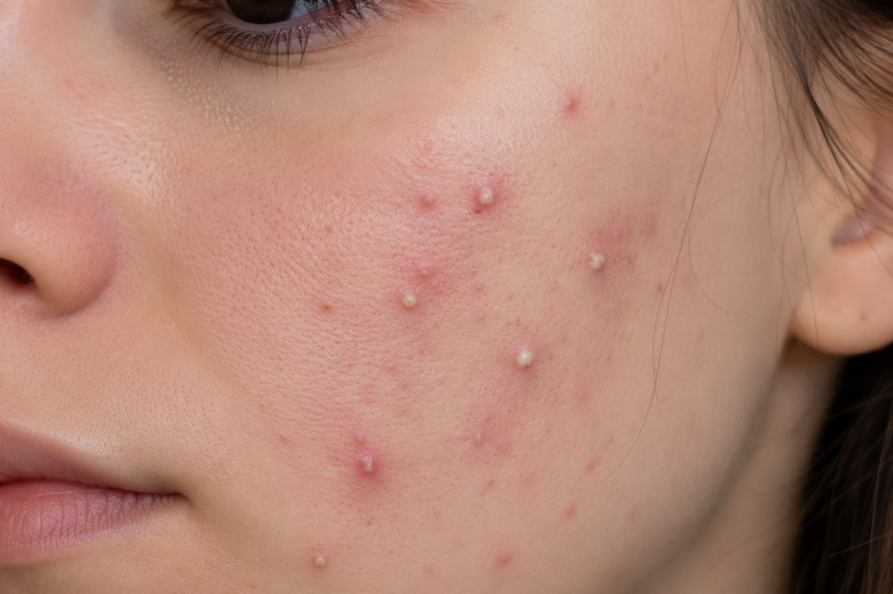
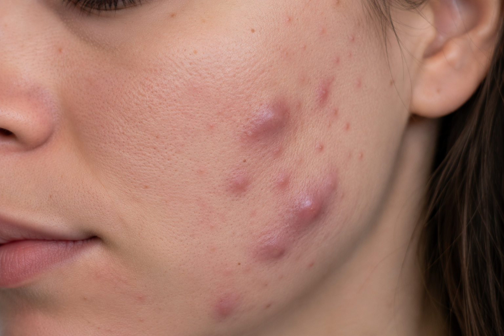
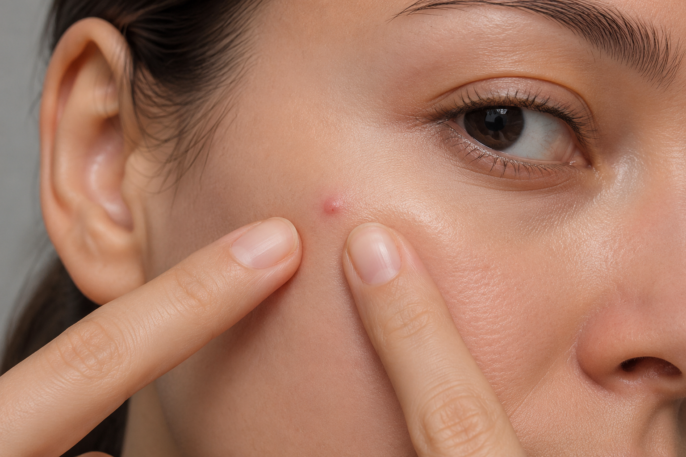
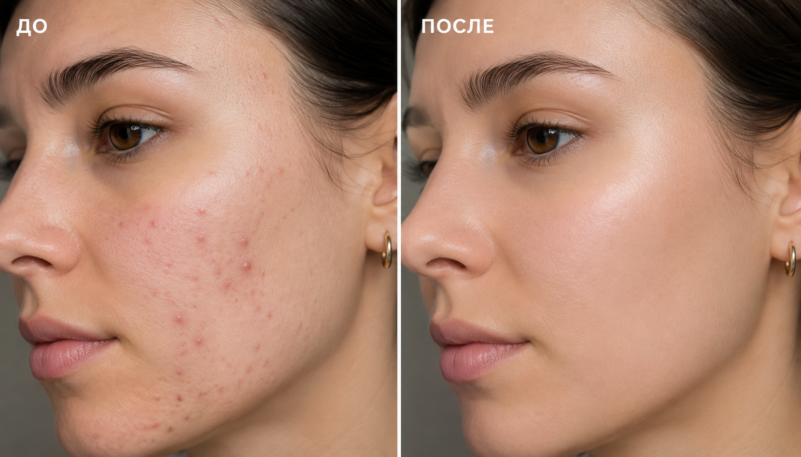

Прыщи на лбу: почему появляются и как избавиться от высыпаний?

Прыщи на лбу — одна из самых распространенных проблем, с которой пациенты обращаются к врачу-косметологу. Именно лоб относится к так называемой Т-зоне, где расположено большое количество сальных желез. При повышенной выработке кожного сала поры быстрее закупориваются, создавая благоприятные условия для развития воспаления. Однако акне редко возникает по одной причине — чаще всего на состояние кожи влияет сразу несколько факторов.
В ЗимаКлиник лечение акне начинается не с подбора косметики, а с определения причины появления высыпаний. Благодаря комплексному подходу и индивидуальным протоколам лечения удается не только уменьшить воспаление, но и предотвратить повторное появление прыщей.
Почему появляются прыщи на лбу?
Высыпания могут возникать в любом возрасте — как у подростков, так и у взрослых.
-
Наиболее распространенными причинами являются:
- гормональные изменения;
- повышенная активность сальных желез;
- неправильно подобранный домашний уход;
- использование комедогенной косметики;
- хронический стресс;
- недостаток сна;
- несбалансированное питание;
- заболевания желудочно-кишечного тракта или эндокринной системы;
- привычка часто прикасаться к лицу руками.
Нередко сразу несколько факторов усиливают друг друга, поэтому самостоятельное лечение не всегда приносит ожидаемый результат.
Какие виды высыпаний бывают?
На лбу могут появляться разные элементы акне, и каждый из них требует своего подхода.

Закрытые комедоны
Небольшие подкожные бугорки белого цвета, возникающие из-за закупорки пор.

Открытые комедоны
Привычные черные точки, образующиеся при окислении кожного сала.

Папулы
Плотные красные воспаленные элементы без гнойного содержимого.

Пустулы
Воспаленные прыщи с белой головкой.

Подкожные болезненные узлы
Более тяжелая форма воспаления, которая может оставлять рубцы и требует обязательного лечения у специалиста.
Почему нельзя просто выдавить прыщ?
Многие пытаются избавиться от воспаления самостоятельно, однако это одна из самых частых ошибок.
-
При выдавливании увеличивается риск:
- распространения инфекции;
- усиления воспалительного процесса;
- появления застойных пятен;
- формирования рубцов и постакне.
Кроме того, механическое повреждение кожи значительно увеличивает срок восстановления тканей. Именно поэтому любые воспалительные элементы рекомендуется лечить под контролем специалиста.

Как избавиться от прыщей на лбу?
Эффективное лечение всегда начинается с диагностики причины появления высыпаний.
В клинике косметологии ЗимаКлиник врач оценивает состояние кожи, характер воспаления и при необходимости рекомендует дополнительное обследование.
-
В зависимости от клинической ситуации могут быть рекомендованы:
- профессиональная чистка лица;
- лечебные химические пилинги;
- аппаратные процедуры;
- биоревитализация
- мезотерапия;
- индивидуально подобранный домашний уход.
Все эти направления входят в перечень услуг клиники и позволяют комплексно работать с акне и его последствиями.
Домашний уход: что действительно важно?
Даже самые современные косметологические процедуры будут менее эффективны без правильного домашнего ухода.
-
Специалисты рекомендуют:
- очищать кожу мягкими средствами два раза в день;
- использовать некомедогенную косметику;
- ежедневно увлажнять кожу;
- применять солнцезащитные средства;
- отказаться от самостоятельного выдавливания воспалений;
- регулярно менять наволочки и полотенца для лица;
- не касаться лица руками без необходимости.
При выраженных высыпаниях подбор домашнего ухода должен проводить врач-косметолог или дерматолог.
Когда необходимо обратиться к врачу?
-
Консультация специалиста необходима, если:
- прыщи не проходят более двух месяцев;
- воспаления становятся болезненными;
- после акне остаются рубцы или пигментные пятна;
- домашний уход не дает результата;
- высыпания появились впервые во взрослом возрасте.
Чем раньше начато лечение, тем выше вероятность полностью восстановить здоровье кожи без образования рубцов.
Лечение акне в ЗимаКлиник

В ЗимаКлиник лечение высыпаний строится на комплексном подходе. Для каждого пациента специалисты разрабатывают индивидуальный протокол коррекции, сочетая современные методы эстетической, аппаратной и инъекционной косметологии. Такой подход позволяет воздействовать не только на внешние проявления акне, но и на причины их возникновения.
Если вас беспокоят прыщи на лбу, не откладывайте консультацию. Своевременное обращение к врачу поможет подобрать эффективное лечение, предотвратить развитие осложнений и вернуть коже здоровый и ухоженный вид.